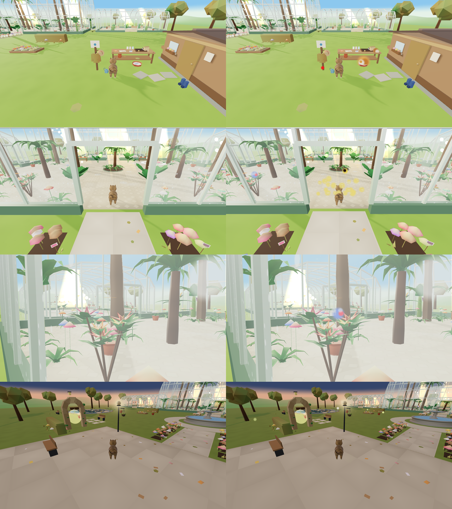

Left before (creatures hidden with ?nocreat=1), right after; tools/verify/verify-greenhouse.html shots p5_*. Rows: (1) bench: a snail on the edge, a ladybird on the hook post, a sleepy cat in the cat's bed; (2) arrival: a puff of pollen and a bee salute as she steps into the glass hall; (3) the hummingbird at the hibiscus (fixed close camera); (4) dusk in the court: moths round the lamps and fireflies. Also in this pass (not visible in stills): pot signs shaded warm hall to cool shed, the day by the real clock (morning, noon, afternoon gold), sound beds that fade in and out by place (shed tin, orchid hush, the fountain heard through the panes), a chime near the hibiscus.
